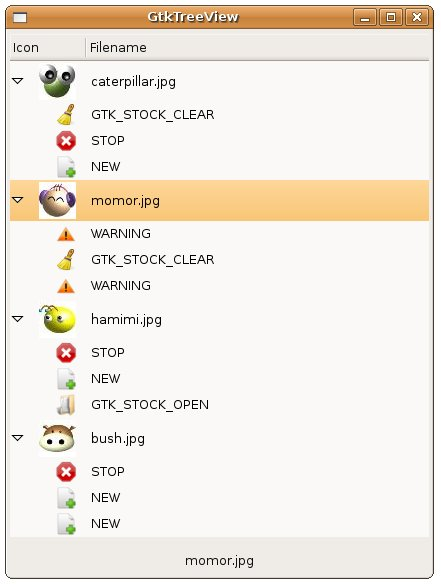

有了 GtkTreeView 與
GtkListStore 的基礎，要在GtkTreeView搭配GtkTreeStore就沒什麼好解釋的了，下面這個範例，只是將 GtkTreeView 與
GtkListStore 範例中的createModel()函式，換成 GtkComboBox
與 GtkTreeStore 中的createModel()函式，剩下的都沒有改變，也就是為 GtkComboBox
與 GtkTreeStore 中的Model換上GtkTreeView的外觀顯示：
- gtk_tree_view_with_tree_store.c
#include <gtk/gtk.h>
enum {
PIXBUF_COL,
TEXT_COL
};
GtkTreeModel* createModel() {
const gchar *files[] = {"caterpillar.jpg", "momor.jpg",
"hamimi.jpg", "bush.jpg"};
gchar *stocks[] = {
GTK_STOCK_DIALOG_WARNING,
GTK_STOCK_STOP,
GTK_STOCK_NEW,
GTK_STOCK_CLEAR,
GTK_STOCK_OPEN
};
gchar *stockNames[] = {
"WARNING",
"STOP",
"NEW",
"GTK_STOCK_CLEAR",
"GTK_STOCK_OPEN"
};
GtkWidget *cellView;
GdkPixbuf *pixbuf;
GtkTreeIter iter1, iter2;
GtkTreeStore *store;
gint i, j, s;
store = gtk_tree_store_new(2, GDK_TYPE_PIXBUF, G_TYPE_STRING);
cellView = gtk_cell_view_new();
for(i = 0; i < 4; i++) {
pixbuf = gdk_pixbuf_new_from_file(files[i], NULL);
gtk_tree_store_append(store, &iter1, NULL);
gtk_tree_store_set(store, &iter1,
PIXBUF_COL, pixbuf,
TEXT_COL, files[i],
-1);
gdk_pixbuf_unref(pixbuf);
for(j = 0; j < 3; j++) {
s = rand() % 5;
pixbuf = gtk_widget_render_icon(cellView, stocks[s],
GTK_ICON_SIZE_BUTTON, NULL);
gtk_tree_store_append(store, &iter2, &iter1);
gtk_tree_store_set(store, &iter2,
PIXBUF_COL, pixbuf,
TEXT_COL, stockNames[s],
-1);
gdk_pixbuf_unref(pixbuf);
}
}
return GTK_TREE_MODEL(store);
}
gboolean selection_changed(GtkTreeSelection *selection, GtkLabel *label) {
GtkTreeView *treeView;
GtkTreeModel *model;
GtkTreeIter iter;
gchar *active;
treeView = gtk_tree_selection_get_tree_view(selection);
model = gtk_tree_view_get_model(treeView);
gtk_tree_selection_get_selected(selection, &model, &iter);
gtk_tree_model_get(model, &iter,
1, &active,
-1);
gtk_label_set_text(label, active);
}
int main(int argc, char *argv[]) {
GtkWidget *window;
GtkWidget *treeView;
GtkCellRenderer *renderer;
GtkTreeViewColumn *column;
GtkWidget *label;
GtkWidget *vbox;
GtkTreeSelection *selection;
gtk_init(&argc, &argv);
window = gtk_window_new(GTK_WINDOW_TOPLEVEL);
gtk_window_set_title(GTK_WINDOW(window), "GtkTreeView");
gtk_window_set_default_size(GTK_WINDOW(window), 200, 50);
treeView = gtk_tree_view_new_with_model(createModel());
renderer = gtk_cell_renderer_pixbuf_new();
column = gtk_tree_view_column_new_with_attributes(
"Icon", renderer,
"pixbuf", PIXBUF_COL,
NULL);
gtk_tree_view_append_column(GTK_TREE_VIEW (treeView), column);
renderer = gtk_cell_renderer_text_new();
column = gtk_tree_view_column_new_with_attributes(
"Filename", renderer,
"text", TEXT_COL,
NULL);
gtk_tree_view_append_column(GTK_TREE_VIEW (treeView), column);
label = gtk_label_new("caterpillar.jpg");
vbox = gtk_vbox_new(FALSE, 5);
gtk_box_pack_start(GTK_BOX(vbox), treeView, TRUE, TRUE, 5);
gtk_box_pack_start(GTK_BOX(vbox), label, TRUE, TRUE, 5);
gtk_container_add(GTK_CONTAINER(window), vbox);
selection = gtk_tree_view_get_selection(GTK_TREE_VIEW(treeView));
g_signal_connect(G_OBJECT(selection), "changed",
G_CALLBACK(selection_changed), label);
g_signal_connect(GTK_OBJECT(window), "destroy",
G_CALLBACK(gtk_main_quit), NULL);
gtk_widget_show_all(window);
gtk_main();
return 0;
}
一個執行的結果如下所示：

|
|